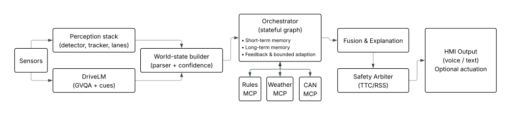

This DriveMCP provides a "modular large model" suite for ADAS, attempting to integrate DriveLM with rule engines, weather, and CAN bus using the MCP protocol. The highlight lies in extracting "compliance" from the black box, using RAG to search legal provisions, and adding RSS guardrails to prevent the large model from acting erratically, solving the pain point that single large models find it difficult to update regulations. However, there are also many drawbacks: claiming to be Agentic, it is actually a carefully orchestrated pipeline, far from true autonomous decision-making; good performance in CARLA simulation does not mean the real car can withstand it, as real-world sensor noise and CAN bus latency are not fully covered; although CAN fault injection is interesting, DTC translation and confidence estimation on real cars may not be reliable. In short, it is a good research prototype, but still far from mass production; do not treat "interpretability" as a get-out-of-jail-free card, safety guardrails are the hard truth.
Existing VLM driving systems (such as DriveGPT4 [4], DriveLM [5]) can generate natural language explanations, but have three major flaws. First is difficulty in compliance updates, traffic laws vary by location and change frequently, hard-coding into model parameters is unrealistic, leading to system difficulty adapting to cross-border or new regulation scenarios. Second is poor traceability, after an accident it is hard to reconstruct decision basis, not meeting functional safety audit requirements. Finally latency and robustness, single large model inference difficult to handle multiple factors simultaneously (such as weather, vehicle condition, road rules), easily fails under out-of-distribution conditions. DriveMCP aims to decouple these functions, solving rule update and audit issues through external tool services, while using safety guardrails to ensure conservative decisions, making up for the deficiencies of existing end-to-end solutions.
方法Method
整体架构分为感知、工具层、编排与安全仲裁。感知层用 DriveLM 做图式视觉问答（GVQA），将语言线索解析为带置信度的结构化 world_state，而非直接依赖仿真真值，确保下游推理基于真实观测。工具层基于 Model Context Protocol (MCP) 部署三个专家服务器：Rules 服务器用混合检索（BM25+Dense）查交通法规，支持版本管理；Weather 服务器评估牵引风险；MCP-CAN 服务器读取车辆遥测和故障码，提供健康上下文。编排层用状态图协调工具调用，支持并行执行和缓存，降低延迟。安全仲裁层计算 TTC 和 RSS 违规，决定是“说话”（建议）还是“行动”（干预），并引入健康评分 h 调整风险阈值，确保在车辆故障时更保守。
The overall architecture is divided into perception, tool layer, orchestration, and safety arbitration. The perception layer uses DriveLM for schematic visual question answering (GVQA), parsing language clues into structured world_state with confidence, rather than directly relying on simulation ground truth, ensuring downstream inference is based on real observations. The tool layer deploys three expert servers based on Model Context Protocol (MCP): Rules server uses hybrid retrieval (BM25+Dense) to search traffic regulations, supporting version management; Weather server evaluates traction risk; MCP-CAN server reads vehicle telemetry and fault codes, providing health context. The orchestration layer uses state diagrams to coordinate tool calls, supporting parallel execution and caching, reducing latency. The safety arbitration layer calculates TTC and RSS violations, deciding whether to "speak" (suggest) or "act" (intervene), and introduces health score h to adjust risk thresholds, ensuring more conservative behavior during vehicle faults.

Fig. 1: DriveMCP architecture with sensor-like perception and DriveLM-derived fact parsing: camera and LiDAR feed a lightweight perception stack and DriveLM; a parser converts DriveLM cues into typed world_state fields; an orchestration graph coordinates MCP servers (Rules, Weather, MCP-CAN); fused outputs are constrained by a safety arbiter; memory and feedback support adaptation and auditability.
Fig. 3: Safety arbitration: actuation is permitted only when an RSS-style safety condition is violated and the utility margin exceeds ∆; otherwise the system defaults to advisory output.
Tested three scenarios in CARLA simulation: multilingual rainy night, cross-border switching, dynamic speed limit. Baselines include VLM-Direct, VLM-Direct+RAG, and VLM-Tools-NoArbiter. Metrics cover violation rate, speeding, response time, and latency. Results show DriveMCP significantly outperforms baselines on violations and speeding, and maintains sub-second latency. Ablation studies show RAG is crucial for cross-border compliance, parallel calls reduce latency, CAN context can improve TTC during braking faults. Robustness tests show when world_state is polluted, the system can still maintain safety through conservative strategies. Especially under CAN fault injection, DriveMCP reduces target speed to 65km/h, significantly reducing near-collision counts.